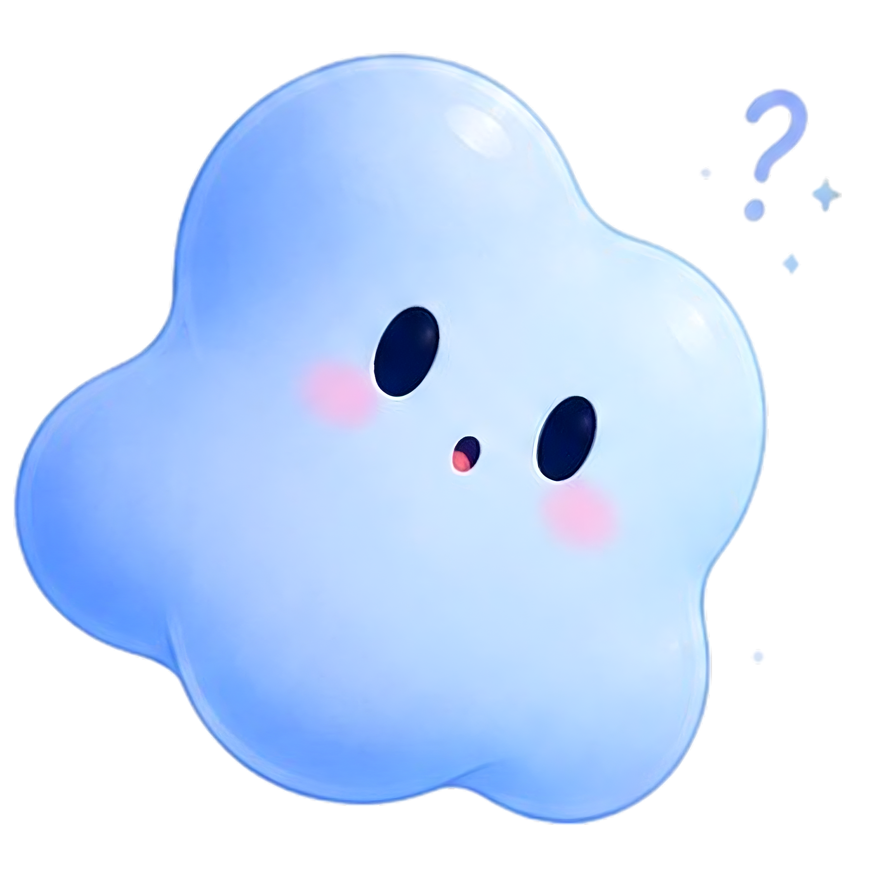
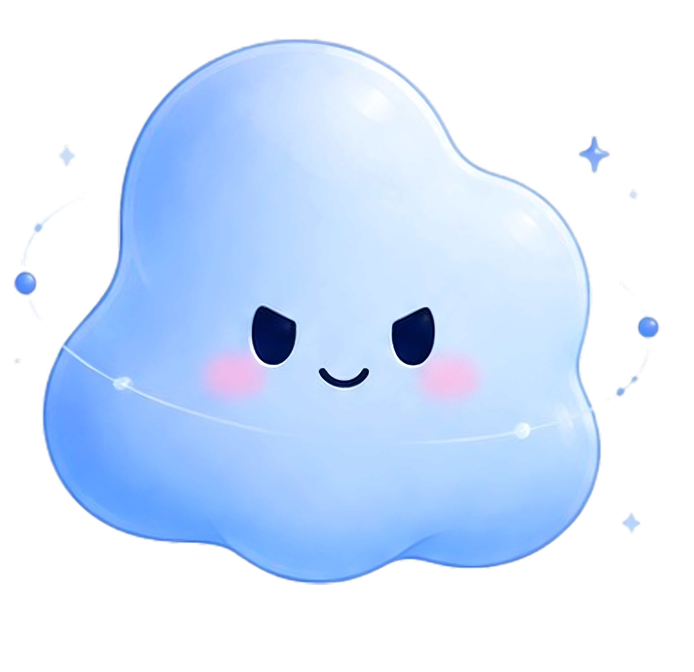
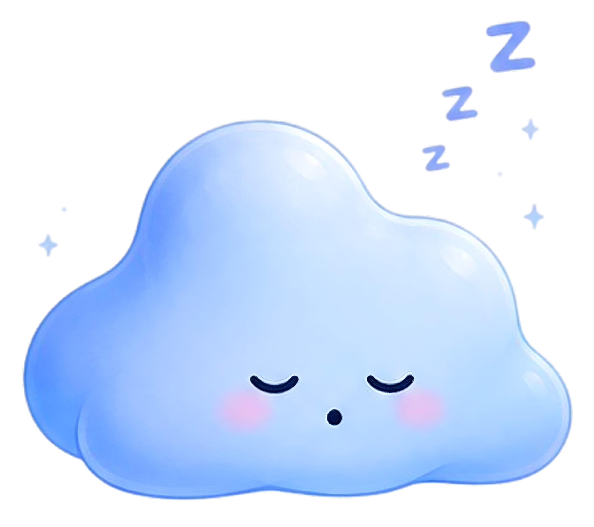

Greeting온보딩 · 첫 인사 · 환영 화면
Greeting온보딩 · 첫 인사 · 환영 화면 Happy작업 완료 · 성공 · 축하 모먼트
Happy작업 완료 · 성공 · 축하 모먼트
Curious질문 · 확인 요청 · 빈 상태
Working작업 진행 중 · 로딩 · 처리 상태Resting대기 · 휴식 · 차분한 안내

Sleeping비활성 · 야간 모드 · 알림 끔Greeting온보딩 · 첫 인사 · 환영 화면Happy작업 완료 · 성공 · 축하 모먼트
Curious질문 · 확인 요청 · 빈 상태
Working작업 진행 중 · 로딩 · 처리 상태
Sleeping비활성 · 야간 모드 · 알림 끔